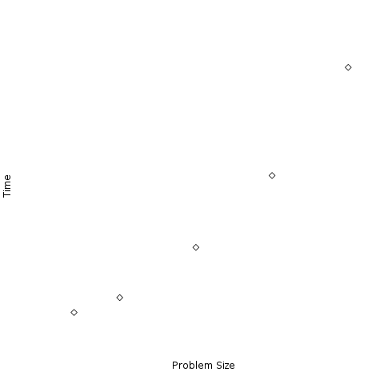
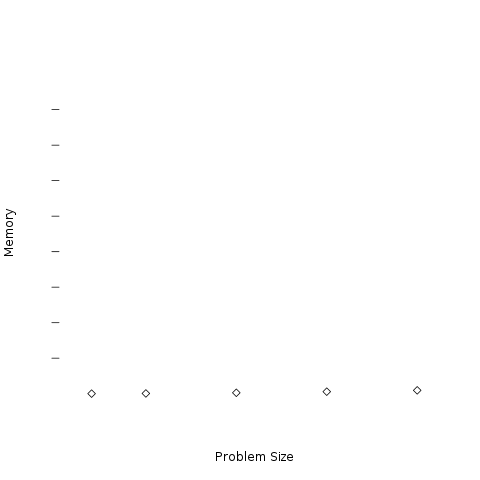
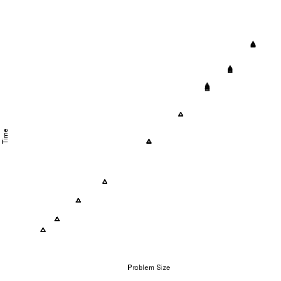
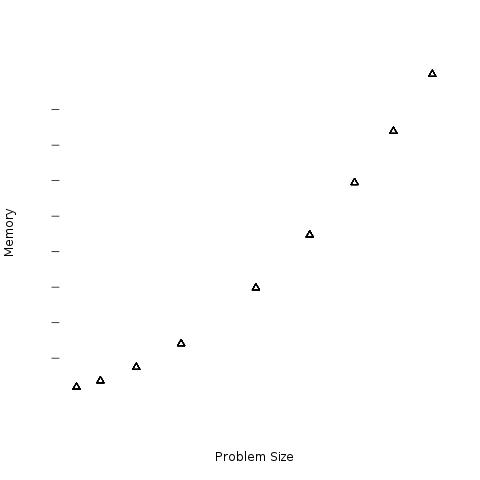

Measurements¶
Goal - To empirically determine which limitations need to be addressed.
Problem Size/Compute time Correlation¶
With all computing applications, as your input size increases the execution time will also increase. This will always happen, however depending on the complexity of the algorithm, the magnitude of the time increases will be different, and needs to be measured. Additionally, most programs will increase their memory use as the problem size increases. However, some programs will produce drastic changes in memory use with only small problem size increments. Other programs may seemingly handle any problem size and not increase memory usage at all. A quick and dirty way to measure this is to run the application with varying problem sizes, and measure the execution time and memory usage. Essentially, creating a standard curve for these two parameters - quickly letting you know what limitations you will encounter when you scale this application to large data sets.
 {kind=link}
{kind=link}
The above data points show an application that has essentially a linear time increase with problem size, but the memory usage is not an issue. Each tick mark represents 16GB of memory. The memory footprint, even at large problem sizes almost never exceds 1.5GB. However, the compute time still needs to be reduced for large problems to be attenable. This would be an application that would benefit from parallel computing.
 {kind=link}
{kind=link}
Our second example shows an application that also has a linear compute time increase. However, the memory usage is also an issue. In fact, even at modest problem sizes, the memory usage is above 64GB of RAM - larger than most standard servers; and certainly above workstations available memory. This application needs to both address compute time and memory usage, thus distributed computing would be the selected method.